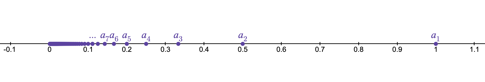
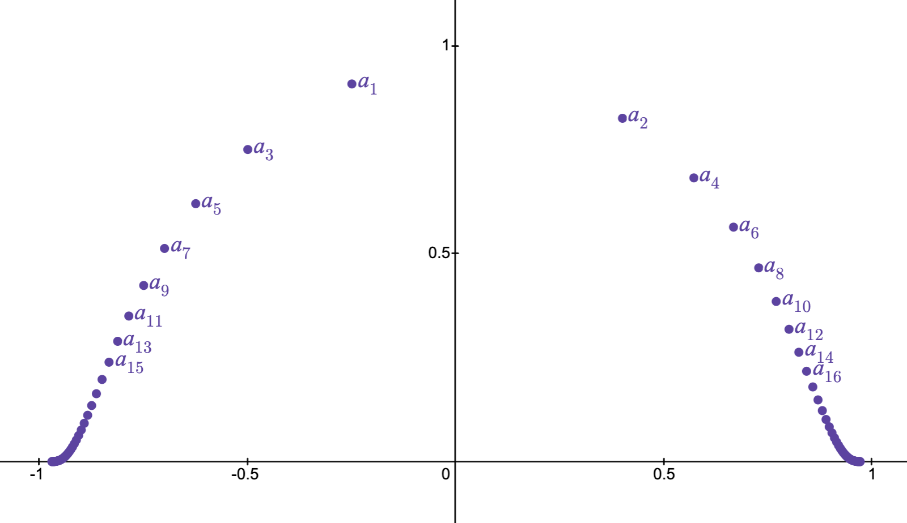
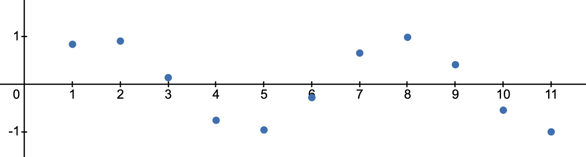
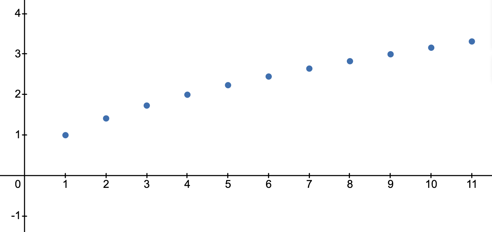
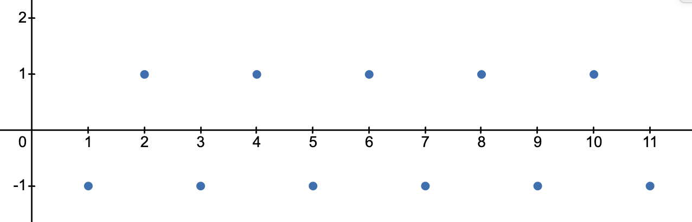

10 Talking About Sequences
Highlights
- Definition of a sequence as a function with domain \(\N\)
- Sequence notation and vocabulary
- Properties that a sequence may or may not have
10.1 Preparation
Sequences are one of the fundamental objects of study in real analysis. They form the theoretical basis for blah blah blah.
Definition 10.1 A sequence in \(X\) is a function \(s:\N\rightarrow X\).
In this context, instead of using standard function notation \(s(1),s(2),\ldots,s(n),\ldots\), we instead use subscripts and write \(s_1,s_2,\ldots,s_n,\ldots\). We refer to a particular \(s_n\) as a term of the sequence and to the input/subscript \(n\) as its index or position in the sequence.
Under this definition, by “sequence” we always mean “infinite sequence” since the domain is \(\N\).
For now, as we get comfortable with the idea of a sequence, we will insist that our sequences start at \(s_1\). Later on, especially when dealing with infinite sums (known as series), we will relax this constraint since it is often convenient to start at \(0\) or some other integer.
The range of \((a_n)\) is \(\{a_n\st n\in\N\}\).
Exercise 10.2 Can a sequence have a range that is finite? Explain.
10.2 Sequence Properties
Below are several properties of sequences that we will need moving forward.
Definition 10.4 Let \((a_n)\) be a sequence in a metric space. Then \((a_n)\) is said to\(\ldots\)
- be constant if \(a_i=a_j\) for all \(i,j\in\N\).
- have distinct terms if \(a_i\neq a_j\) whenever \(i\neq j\).
- be bounded if its range is.
For sequences in \(\R\), we can make some further definitions.
Definition 10.4 Let \((a_n)\) be a sequence in \(\R\). Then \((a_n)\) is said to be\(\ldots\)
- increasing if \(i\leq j\) implies \(a_i\leq a_j\).
- decreasing if \(i\leq j\) implies \(a_i\geq a_j\).
- strictly increasing (repsectively strictly decreasing) if \(i< j\) implies \(a_i< a_j\) (respectively \(a_i>a_j\)).
- monotonic if it is either only increasing or only decreasing, and strictly monotonic if it is either only strictly increasing or only strictly decreasing.
- bounded above (respectively, bounded below) if its range is.
Exercise 10.5 Give an example of a sequence in \(\R\) with the properties below, or prove that no such example exists.
- A sequence which is both increasing and decreasing.
- A sequence which is strictly increasing and bounded above.
- A bounded sequence of distinct terms.
- A sequence of distinct terms that is increasing but not strictly increasing.
- An unbounded sequence which is not monotonic.
- A sequence with a finite range that is unbounded.
Theorem 10.6 (The Amazingly Useful Theorem) Suppose \((i_n)\) is a strictly increasing sequence in \(\N\). Then \(i_n\geq n\).
Exercise 10.7 Prove Theorem 10.6 by induction.
10.3 Visualizing Sequences
We often visualize a sequence \((a_n)\) by showing either its range in the codomain or, for sequences in \(\R\), its graph in the cartesian plane.


When plotting the graph of a sequence, we use the horizontal axis for the indices (in \(\N\)) and the vertical axis for the terms (in \(\R\)).



A collapsed hint.
Review Questions
- Question 1
- Question 2
10.4 To include
- Quick teaser about convergence
- Lots of examples of sequences
- Constructing sequences by induction?